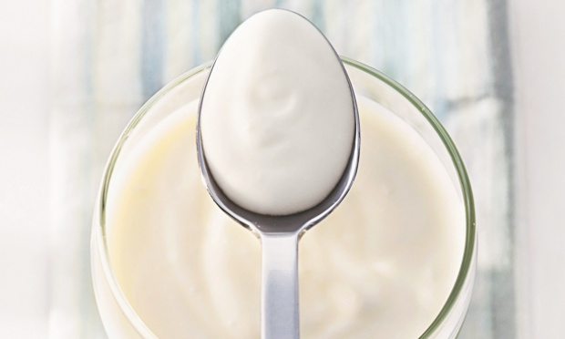

Conheça 6 alimentos que ajudam a controlar a vontade de comer/li>
Maça - Traz vitaminas do complexo B, importante para a formação da serotonina, responsável pela sensação de bem-estar.
Amêndoas sem sal - É fonte de selênio, mineral que colabora com a produção dos neurotransmissores relacionados à saciedade.
Suco de Romã - É rico em selênio e manganês, minerais que reforçam as defesas do cérebro, mais vulnerável ao ataque dos radicais livres, e ácido málico, que diminui a vontade de comer doce.
Ovo - Além de fornecer proteína, que dá saciedade, contém colina, que forma as membranas das células, incluindo as do sistema nervoso.
Salmão - Fonte de ômega-3, ácido graxo que colabora com a redução da ansiedade e promove o bom humor.
Espinafre - Centrifugado, libera substâncias que atuam nos hormônios que controlam a fome, indicou um estudo recente.

Confira as calorias do Iogurte Grego
Grego Original Lacfree, Verde Campo(90 g) - 35 kcal
5,4 g carboidrato
5,6 g proteína
0 g gordura
38 mg sódio
135 mg cálcio
Grego Zero, Itambé (90 g) - 37 kcal
5,2 g carboidrato
4,3 g proteína
0 g gordura
61 mg sódio
104 mg cálcio
Grego Zero Morango, Vigor (100 g) - 46 kcal
5,8 g carboidrato
5,6 g proteína
0 g gordura
43 mg sódio
228 mg cálcio
Grego Light Morango, Danone (100 g) - 80 kcal
11 g carboidrato
5 g proteína
1,9 g gordura (1,3 g saturada)
59 mg sódio
160 mg cálcio
Grego Light com calda de Manga, Nestlé (130 g) - 87 kcal
14 g carboidrato
4,2 g proteína
1,8 g gordura (1 g saturada)
60 mg sódio
162 mg cálcio